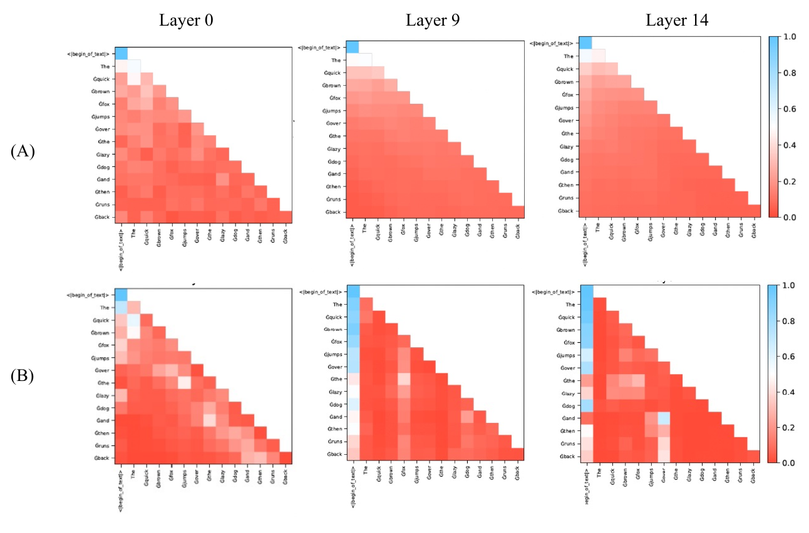
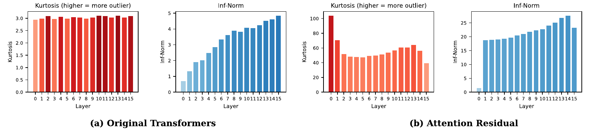
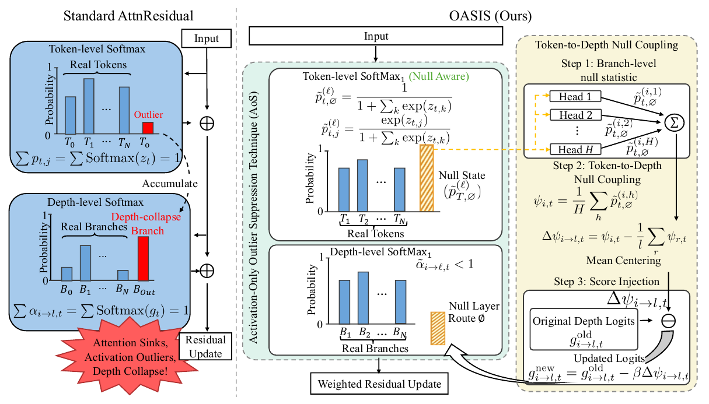
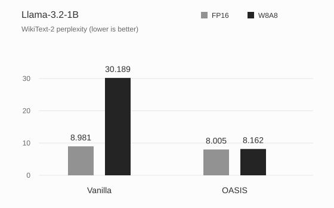
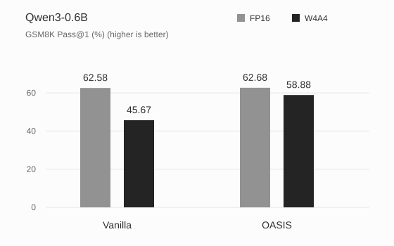

Llama-3.2-1B W8A8 · WikiText-2
30.1898.162
72.96% lower perplexity
Vanilla AttnResidual → OASIS
Null-aware routing across tokens and layers.
 1Northwestern University
1Northwestern University 6University of California, San Diego
6University of California, San Diego 7Texas A&M University
7Texas A&M UniversityAttention Residuals add a choice over depth. That extra flexibility also creates another place for attention to concentrate.
Token attention chooses which tokens to read. Depth attention chooses which earlier branches to mix. Both use softmax, so each must assign all probability mass to real candidates, even when the desired update is close to zero.
We study two observable effects in the paper's Llama-3.2-1B setup: attention that concentrates on the first token, and large activation outliers across layers. They motivate a null option at both levels and a way to connect the two routing decisions.
The first column in each map corresponds to the beginning-of-text token. A vertical band of high attention means later queries repeatedly assign mass to that token.
In these representative maps, the AttnResidual variant shows stronger concentration than the original Transformer. Comparing layers 0, 9, and 14 shows how this pattern develops across depth.
Figure 2 · Llama-3.2-1B
A: Original Transformer · B: AttnResidual

The paper also measures hidden-state kurtosis and infinity norm across layers. The AttnResidual variant has heavier tails and larger activations in this setup. The two pairs below use different vertical scales.

Give both routers a null option, then let token-level null evidence inform the choice over depth.
AoS applies \(\operatorname{Softmax}_1\) independently at the token and depth levels. OASIS adds a connection between them: each branch summarizes how much its attention heads route to null, and the depth router uses that signal to adjust the branch's logit.
This distinguishes the coupling mechanism from the null normalization it builds on. The four variants evaluated in the paper make the progression explicit.
| Variant | Token null route | Depth null route | Token-to-depth coupling |
|---|---|---|---|
| Vanilla AttnResidual | No | No | No |
| OutEffHop | Yes | No | No |
| AoS | Yes | Yes | No |
| OASIS | Yes | Yes | Yes |
Variants as evaluated in this paper, Sections 4.2, 4.3, and 6.1.

\(\operatorname{Softmax}_1\) gives attention an explicit zero-valued option at both levels. The null probability for one attention head is:
OASIS averages the null probabilities across heads to measure how much a branch routes to the null state.
The router subtracts the centered null signal from each depth logit, scaled by \(\beta\geq 0\). It then applies \(\operatorname{Softmax}_1\) over depth.
For query token \(t\), \(m\) is the number of key tokens allowed by the attention mask. The source branch is \(i\), the attention head is \(h\), and \(H\) is the number of heads. The token-attention logits are \(z_{t,k}^{(i,h)}\).
For target layer \(\ell\), \(g_{i\to\ell,t}\) is a depth-routing logit. The centered statistic \(\Delta\psi_{i\to\ell,t}\) is the difference between a branch's mean null probability and the candidate-branch mean. With \(\beta=0\), the coupling makes no adjustment. See Section 4.3 of the paper.
The paper studies near-no-op updates under assumptions on token values and separation between depth branches. It describes conditions under which depth routing concentrates on a branch and shows how an explicit null channel makes small updates feasible without allocating all probability mass to real tokens or branches.
These results describe feasibility and conditional routing behavior. The experiments evaluate the behavior of the trained variants. Read Section 5 and its assumptions.
Llama-3.2-1B W8A8 · WikiText-2
Vanilla AttnResidual → OASIS
Qwen3-0.6B W4A4 · GSM8K
Uncoupled AoS → OASIS
FP16 provides a reference for how much performance each trained variant loses under quantization. These two examples show both the starting point and the quantized result.


Means from Table 2. FP16 starting points differ, so the plots show each variant's own change under quantization.
AoS and OASIS both have token and depth null routes. Their comparison measures the additional effect of coupling in these trained variants. On Qwen3-0.6B, W4A4 GSM8K rises from 54.21% to 58.88%. The gain is smaller on Llama-3.2-1B, from 13.34% to 13.52%; its W8A8 perplexity drops from 9.364 to 8.162. The effect depends on the backbone and metric.
| Backbone | Method | W8A8 PPL ↓ | W4A4 GSM8K (%) ↑ |
|---|---|---|---|
| Llama-3.2-1B | Vanilla | 30.189 ± 0.063 | 12.97 ± 0.24 |
| OutEffHop | 10.419 ± 0.011 | 13.16 ± 0.21 | |
| AoS | 9.364 ± 0.010 | 13.34 ± 0.18 | |
| OASIS | 8.162 ± 0.009 | 13.52 ± 0.17 | |
| Qwen3-0.6B | Vanilla | 36.642 ± 0.079 | 45.67 ± 0.86 |
| OutEffHop | 10.599 ± 0.012 | 52.36 ± 0.74 | |
| AoS | 9.615 ± 0.011 | 54.21 ± 0.66 | |
| OASIS | 9.517 ± 0.010 | 58.88 ± 0.59 |
The table reports mean ± standard deviation over three runs. Vanilla is the paper's AttnResidual baseline; AoS uses independent null routing at both levels. The metrics are WikiText-2 perplexity and GSM8K Pass@1. W8A8 uses 8-bit weights and activations; W4A4 uses 4-bit weights and activations.
Full results & protocolThe paper also tests Sparsemax and Entmax15 on Llama-3.2-1B. Both improve W8A8 perplexity relative to Softmax in this comparison. OASIS has the lowest perplexity and activation kurtosis among these tested variants.
| Method | Average kurtosis ↓ | W8A8 perplexity ↓ |
|---|---|---|
| Softmax | 91.706 ± 0.083 | 30.189 ± 0.063 |
| Sparsemax | 87.322 ± 0.088 | 19.814 ± 0.061 |
| Entmax15 | 13.134 ± 0.032 | 19.600 ± 0.056 |
| OASIS | 3.024 ± 0.015 | 8.162 ± 0.009 |
Mean ± standard deviation over three runs. This comparison is specific to the tested Llama-3.2-1B variants. See Table 3 and Section 6.4 ↗
For the performance comparisons, the paper continues training Llama-3.2-1B and Qwen3-0.6B on BookCorpus and Wiki40B/en, then evaluates them on WikiText-2 and GSM8K. The tables report results over three runs. GSM8K uses chain-of-thought prompting and Pass@1, with OmniQuant for W4A4 quantization.
These experiments cover two small backbones. The attention maps provide qualitative examples of routing behavior. Broader validation on larger models and more tasks, the risk of suppressing useful weak signals through excessive null allocation, and deployment cost in optimized kernels remain open in this manuscript.
Training details and limitations ↗@inproceedings{luo2026attention,
title = {Attention Sinks and Outliers in Attention Residuals},
author = {Haozheng Luo and Haoran Dai and Ching-Yuen Huang and
Shaoyang Zhang and Xi Chen and Eric Hanchen Jiang and
Yijiang Li and Chenghao Qiu and Chenwei Xu and
Zhenyu Pan and Haotian Zhang and Binghui Wang and Yan Chen},
booktitle = {The Fortieth Annual Conference on Neural Information Processing Systems},
year = {2026},
url = {https://openreview.net/forum?id=yjVSLVS0Dh}
}